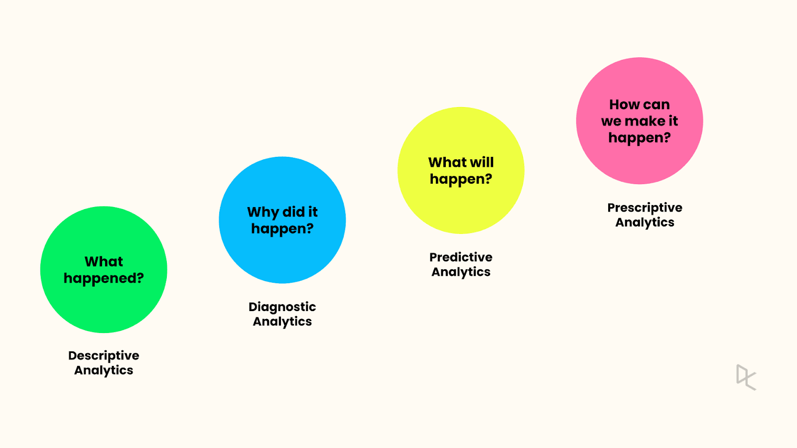

Nhat’s Introduction
Data Science for the Public Good
May 17, 2024
Introduction
Hello, it’s me! My name is Nhat, but I know it’s hard to pronounce! So just call me Chris!Majors
A first-year student in the Iowa State honors program, struggling with a triple major in computer science, data science and applied mathematics. :(
Data Science with Me
Why data science? Imagine a world where every second brings new data and endless opportunities to uncover hidden patterns. Sounds like a interesting version of a treasure hunt, right? That means, becoming a data scientist guarantees that I’ll never run out of puzzles to solve, and let’s face it, puzzles are way more fun than Sudoku.
Prior Experience?
My passion for mathematics and logical challenges naturally drew me to the fascinating world of AI and data science. I don’t have much coding experience regarding these two areas, but I strongly believe my statistical and mathematical foundation is a great plus during my journey.
Hobbies
Outside of my academic endeavors, I enjoy participating in mathematics competitions (because who doesn’t love a good brain workout?), developing software projects, and staying up-to-date with the latest tech trends. I also have a passion for leadership and community involvement, which has seen me take on various extracurricular activities.Gertrude Herr Adamson Award ($1,000)
Iowa Collegiate Math Competition (1st Place)
Objectives
Academic and Professional Goals
I’m on a quest to climb the academic ladder, aiming for a Ph.D. degree after graduating. My current mission is to absorb as many advanced courses as possible and utilize online platforms like Coursera to build a robust foundation in machine learning. Also, I want to join a research, where I can leverage my skills to prepare for an intensive study in machine learning.
Skills and Development
Valued Skills
- Analytical thinking and problem-solving (a.k.a. being a data detective)
- Proficiency in programming languages like Python
- Strong foundation in mathematical concepts and their applications (because math is the language of the universe, and who doesn’t want to speak universe?)
Skills to Develop
- Data exploration and visualization (turning data into beautiful, insightful art)
- Data cleaning (because even data needs a good scrub sometimes)
- Data processing (preparing data for the ultimate transformation)
- Basics of AI and machine learning knowledge (unlocking the secrets of smart machines) 
Pursuing These Skills
These skills are essential to be well-prepared for future internships and professional jobs. Mastering them will allow me to tackle complex problems, effectively communicate insights, and stay competitive in the rapidly evolving field of data science.
Interesting Fact
An interesting fact about me is that I thrive on challenges and enjoy stepping out of my comfort zone. My background and experiences have shaped my academic journey and fueled my passion for machine learning and data science. I look forward to sharing my knowledge and learning from my peers at Iowa State.
P.S. If you ever need a teammate for any development projects, I’m your person. Just bring some coffee.